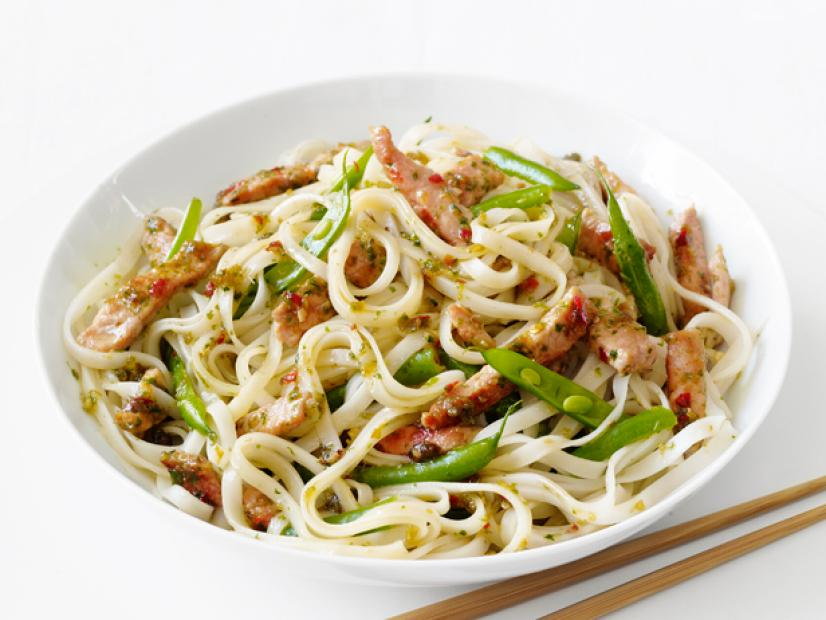

🍜 Thai Pork && Noodles Recipe 🍜
- 1 pound thin boneless pork chops, fat trimmed

- 8 ounces wide Thai rice noodles

- 1 cup fresh cilantro (leaves and stems)

- Finely grated zest && juice of 1 lime


- 2 slices peeled ginger

- 2 cloves garlic, smashed

- 3 chopped jalapeno peppers

- 2 shallots, roughly chopped

- 3 tablespoons fish sauce

- 2 tablespoons light brown sugar

- 4 tablespoons peanut oil

- 1/4 pound green beans, split lengthwise and cut into pieces

Description : -
- Place the pork in the freezer about 10 minutes to make it easier to slice.
- Soak the noodles in very hot water until just tender, about 10 minutes; drain.
- Snip the noodles with scissors into shorter lengths.
- Cut the frozen pork crosswise into 1/4-inch-wide strips.
- Puree the cilantro, lime zest and juice, ginger, garlic, jalapenos, shallots, fish sauce,
brown sugar and 1 tablespoon water in a food processor until smooth,
scraping down the processor as needed.
- Heat 3 tablespoons peanut oil in a large skillet over high heat.
- Add half the cilantro mixture and stir-fry 1 minute.
- Add the pork and stir-fry until no longer pink, 2 to 3 minutes.
- Transfer the pork with a slotted spoon to a plate.
- Add the remaining 1 tablespoon peanut oil to the skillet; add the green beans and stir-fry until tender,
4 to 5 minutes.
- Add the noodles, pork and 2 tablespoons of the remaining cilantro mixture.
- Cook, tossing with tongs, until heated through, about 2 minutes.
- Stir in the remaining cilantro mixture to taste.
